Insomniac
Features and interviews for Insomniac, the US events company, written as a contributing editor. 170 pieces from the deep archive.
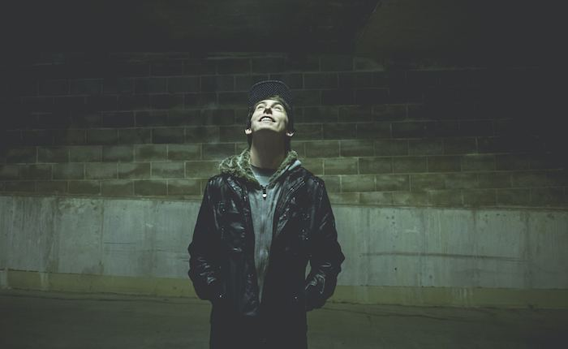
Notaker Previews Massive New ‘Genesis’ EP on Monstercat With “Terra”
24 October 2017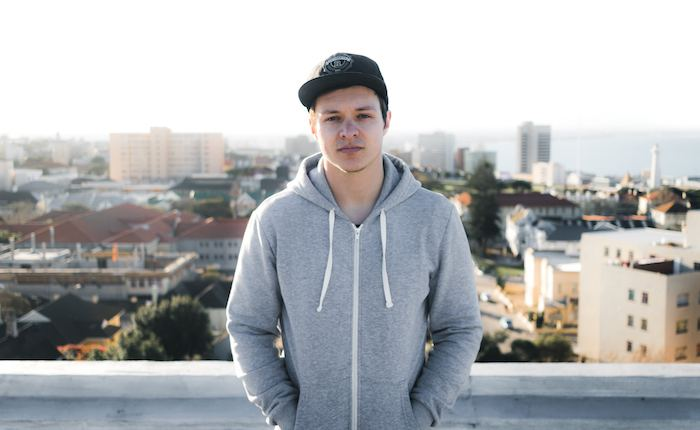
So Schway Gets Into the ADE spirit With Fresh House Cut “G Sharp”
20 October 2017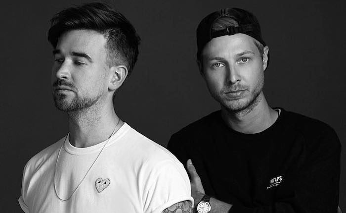
Mat.Joe Returns to Mother Records With the Raw Grooves of “I Go”
10 October 2017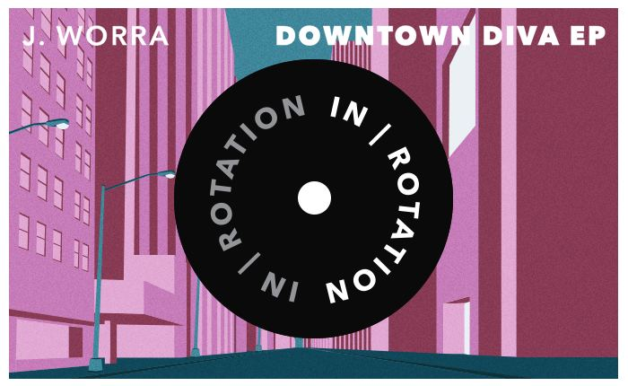
J. Worra Hits Her Stride on the 5-Track Powerhouse ‘Downtown Diva’ EP
5 October 2017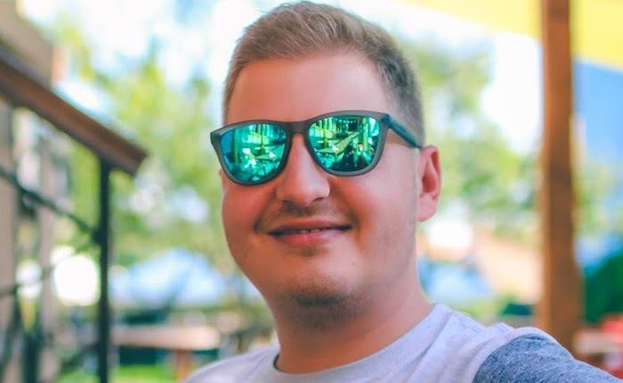
Suncatcher Pushes Things Into 138-BPM Territory With “The Faded Red & Blue” Remix
20 September 2017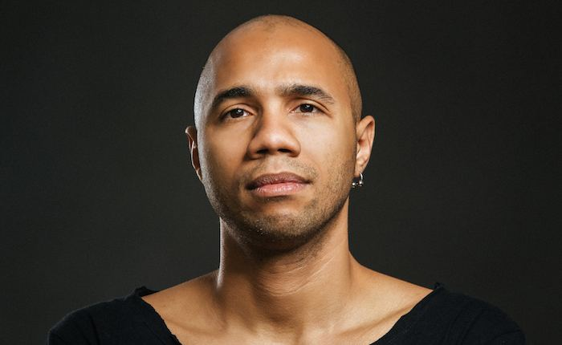
Metronome #130: Vinicius Honorio
20 September 2017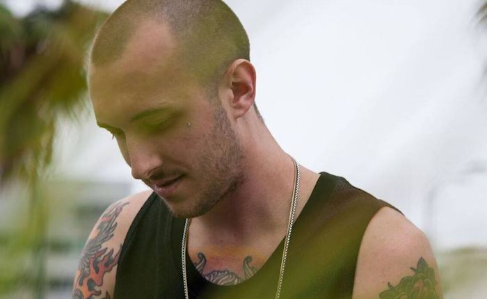
Mahalo Showcases His Crossover Skills With His Nocturnal Wonderland 2017 Mix
13 September 2017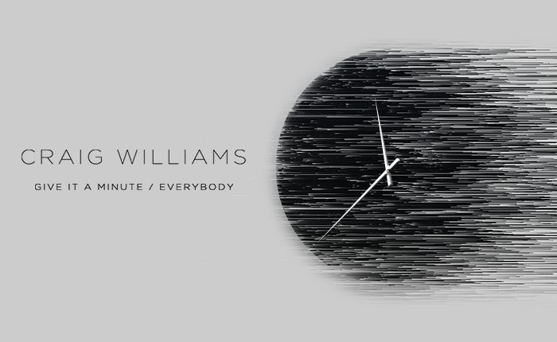
Craig Williams Arrives With a Double Dose of Deep, Hypnotic Vocal House for Insomniac Records
8 September 2017Saad Ayub Teams With Christina Novelli on Vocal Anthem “The Only One”
6 September 2017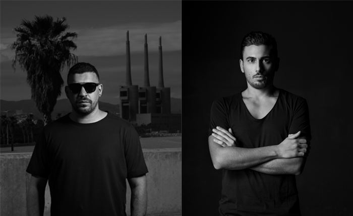
Luigi Madonna & Roberto Capuano Deliver a Drumcode A-Side With “Limitless”
1 September 2017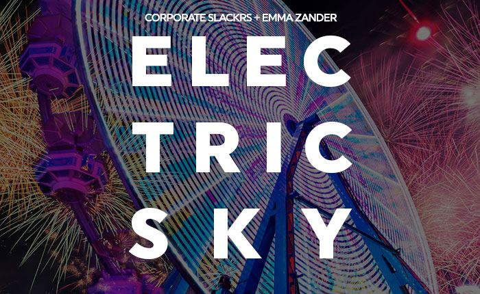
Corporate Slackrs Channel the “Electric Sky” of EDC Las Vegas With New Single on Insomniac Records
31 August 2017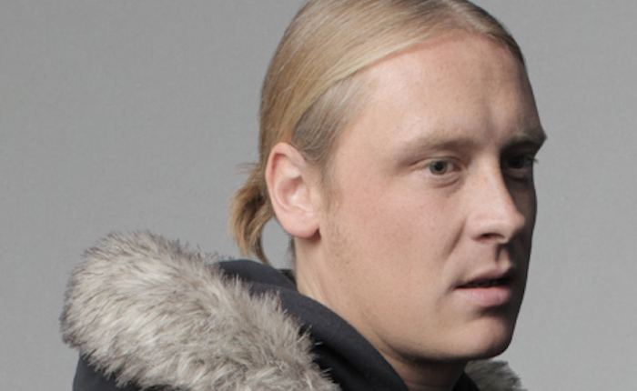
Sam Supplier Jumps Aboard Champion Records With “Night & Day”
29 August 2017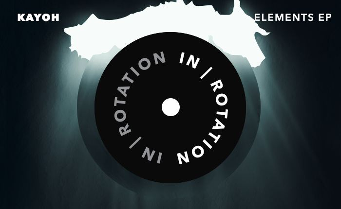
Kayoh Channels His ‘Elements’ With New EP for IN / ROTATION [Free Download]
24 August 2017Franky Rizardo Bounces to Circus Recordings With the Rolling Tech of “Take Off”
22 August 2017Noise Zoo Steers Toward the Euphoric Side on “Twister”
18 August 2017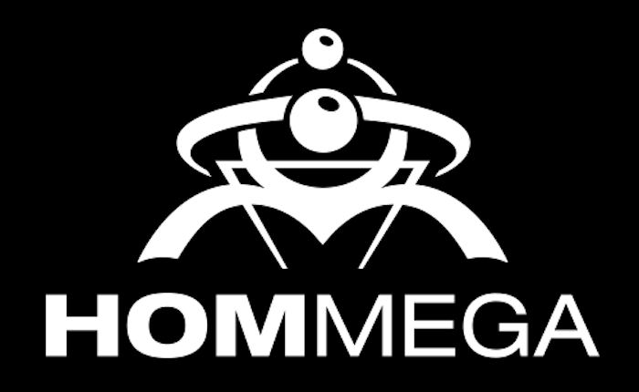
Cut From the Catalog: HOMmega Productions
18 August 2017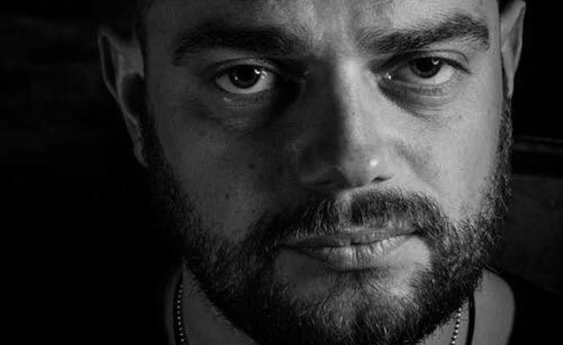
Kydus Drops Summer Slammer With “First Contact”
16 August 2017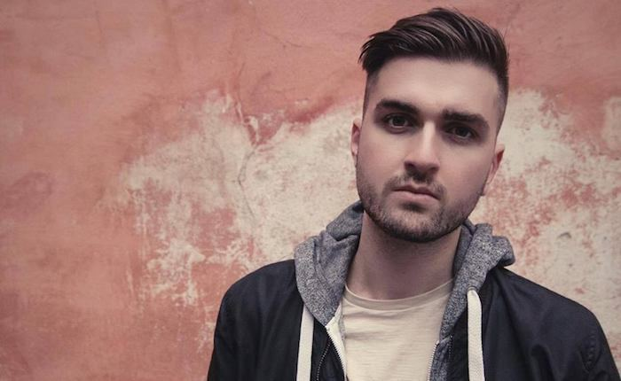
Tobtok Recruits Lonestate on Vocals for the Uplifting “Not Afraid”
8 August 2017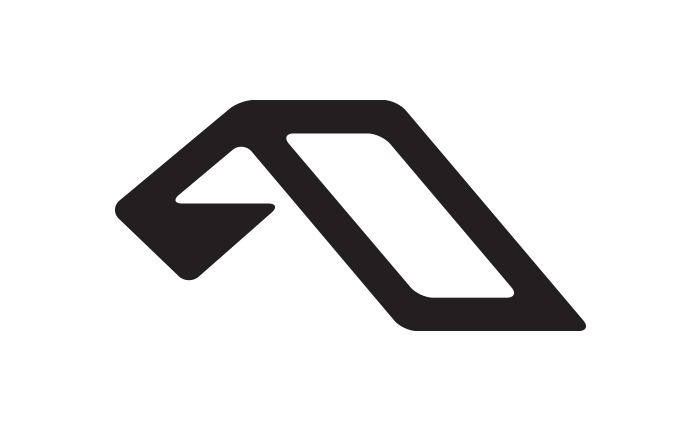
Cut From the Catalog: Anjunabeats
2 August 2017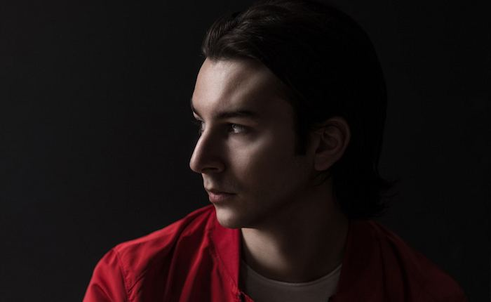
Metronome #123: Marcus Santoro
1 August 2017Ruben de Ronde Forms a #TranceFamily Super Trio for “BombSquadKittens”
17 July 2017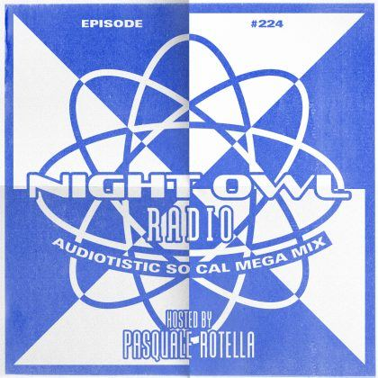
Cut From the Catalog: Subculture
30 June 2017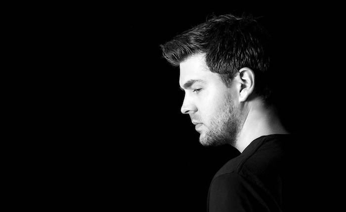
Kyle Watson Takes Things Big and Groovy on “Desiree” Remix
19 June 2017Marsh Drops Silky-Smooth Deep House Record “Find Me”
2 June 2017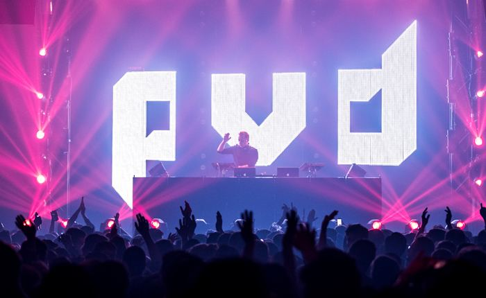
Paul van Dyk’s Mid-Tour Dreamstate Report: “A Very Dedicated, Energetic Audience”
19 May 2017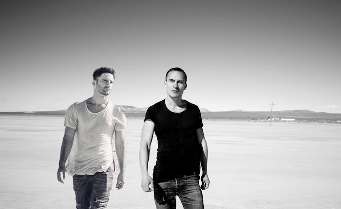
Jerome Isma-Ae Teams Up With Alastor for the Brooding “Wilde”
18 May 2017Exclusive Oliver Heldens EDC Las Vegas 2017 Mix + Interview
12 May 2017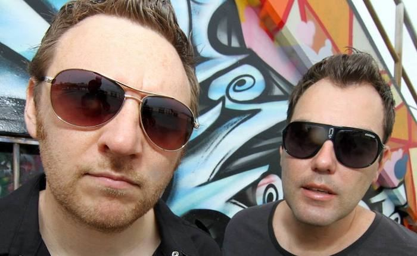
Binary Finary Show Their Veteran Game With Exclusive Dreamstate SF 2017 Mix
3 May 2017Cut From the Catalog: Elevate Music
21 April 2017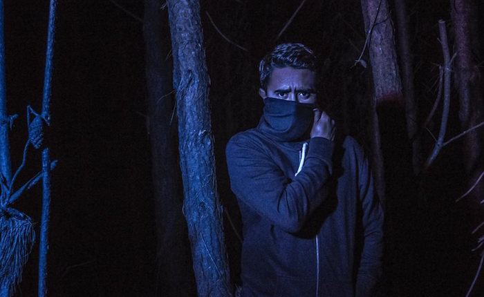
Flapo Fashions a Seductive Remix of Max Styler’s “Deep Dreams”
20 April 2017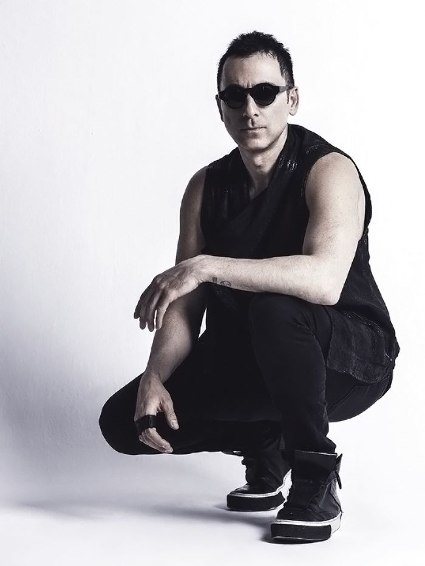
Dubfire Is the Techno Scene’s Resident “Japanophile”
14 April 2017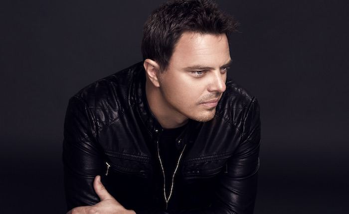
The Story of How Markus Schulz Re-emerged as Dakota
13 April 2017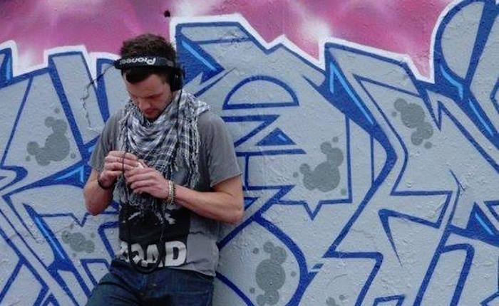
Oliver Jay Dials Up the Future House Funk With “Cloop”
11 April 2017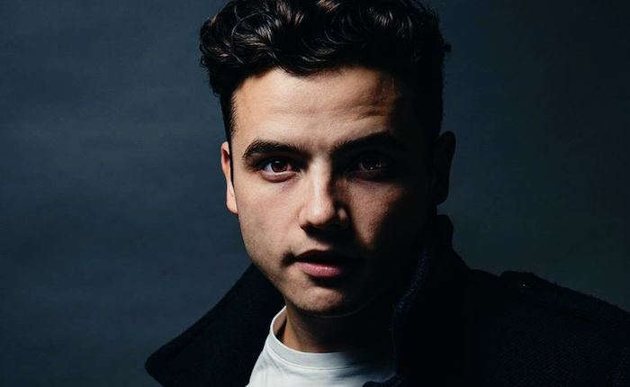
Metronome #108: KC Lights
11 April 2017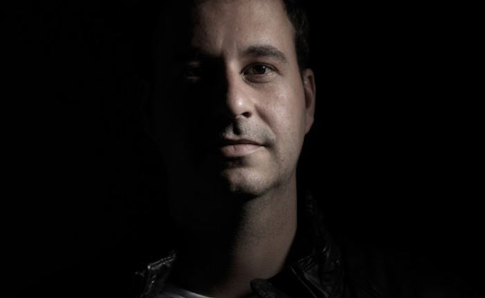
Liquid Soul on Taking the Psy Sound to the Trance Massive
5 April 2017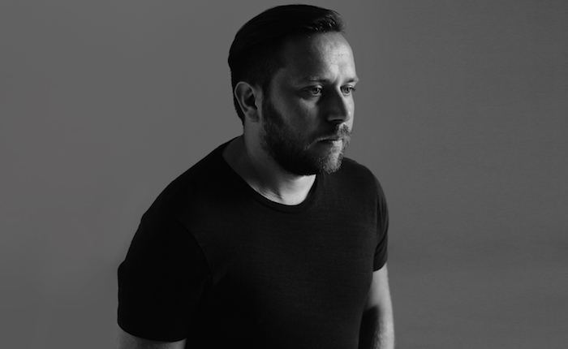
Weiss Returns to Toolroom With Soulful Tech-House Weapon “You Better Run”
23 March 2017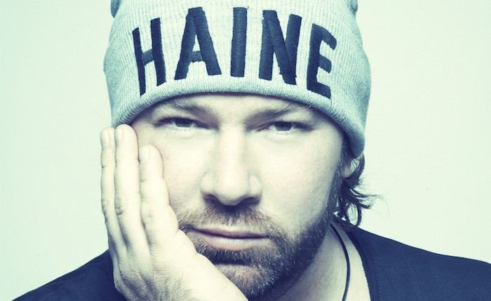
Shiba San Unleashes a Bass-Infused Tech Monster With “Drop It”
21 March 2017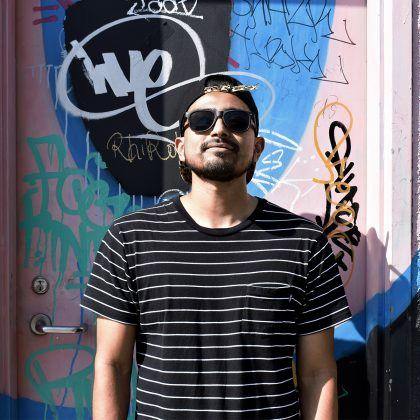
Hardsoul Twists Raphaella’s Gorgeous Vocals Into Versatile Floor-Filler “Weightless”
16 March 2017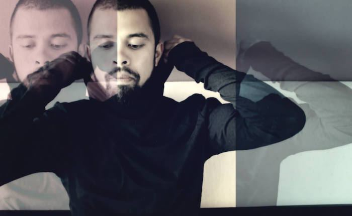
Joyce Muniz Taps Christian Nielsen for a Thumping Rework of “Wake Beside You”
14 March 2017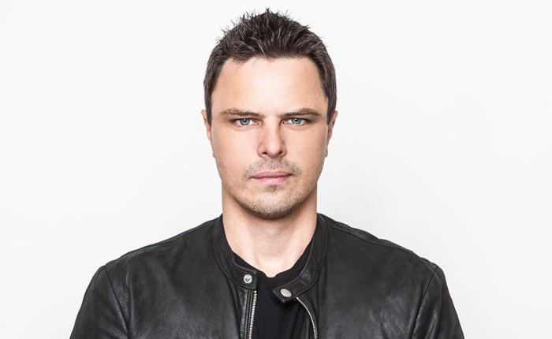
From Berlin to Miami With Markus Schulz
6 March 2017“Dance Music Is Undeniably International”: Hardwell Talks Tech, Dance Music’s Evolution and Festivals
14 February 2017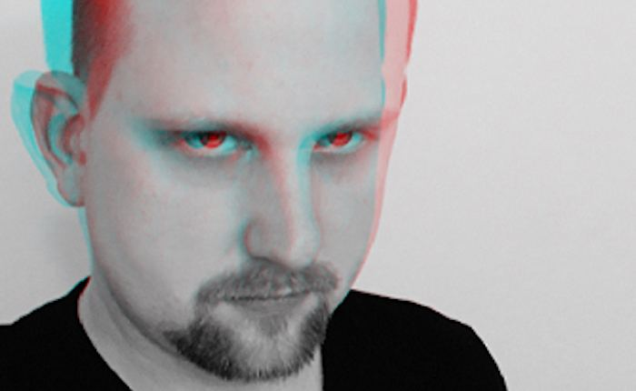
SCHALA Pours Out Euphoric Thumper With “Chalice”
24 January 2017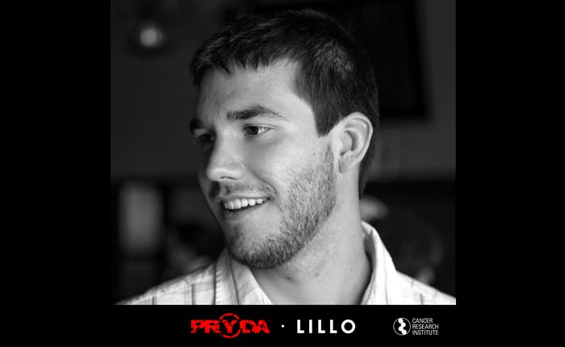
Eric Prydz Unveils New Single “Lillo” to Fundraise for Cancer Research
28 December 2016Tiësto Explores His Deeper Side With New ‘AFTR:HRS’ Compilation
27 December 2016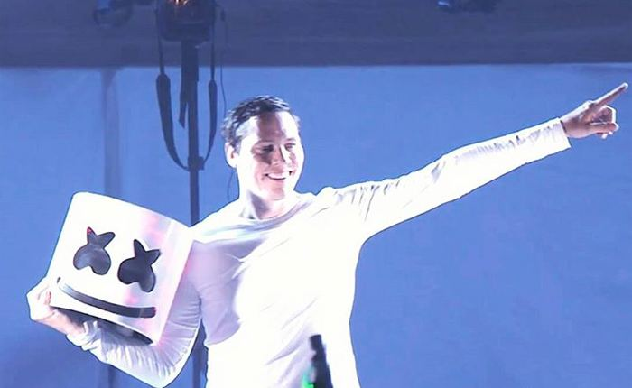
Watch Marshmello Prank EDC Las Vegas With Big Tiësto Reveal
22 June 2016Female Names You Should Know in Berlin’s Dance Music Scene
8 March 2016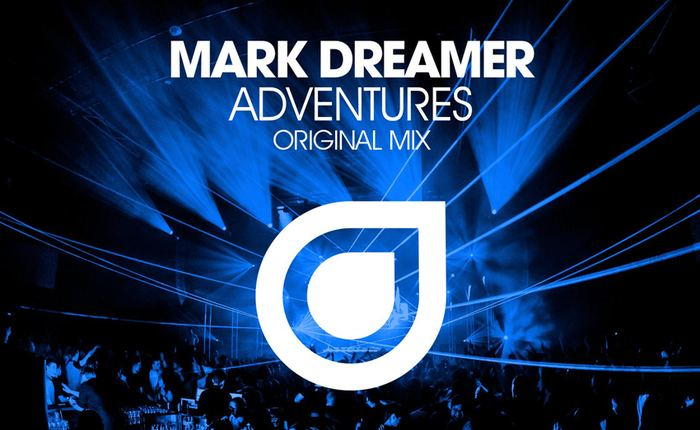
Mark Dreamer Delivers Progressive Trance Perfection With “Adventures”
15 January 2016Dubstep Pioneer Benga Makes His Return With “Make Moves”
14 January 2016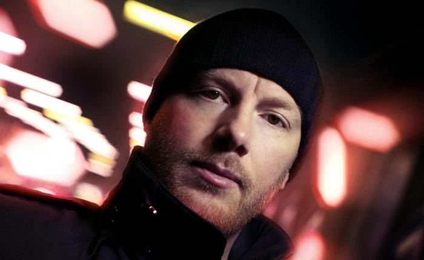
Eric Prydz Unveils His Epic Rob Swire Collaboration “Breathe”
11 January 2016Free Download: Hardwell Explodes Into 2016 With “Blackout”
7 January 2016